A 11 miles environ du Centre du Désert, en Californie, vers Parker, Arizona. L. McGinnis, à gauche, et George Adamski, à droite.
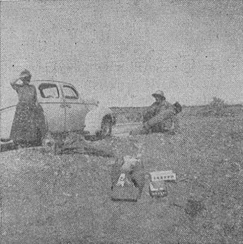
Un homme d'un autre monde a mis le pied sur la planète Terre
le novembre1952. Ma femme, moi et nos amis assistèrent à cet événement qui eut lieu à
10,2 miles du Centre du Désert, en Californie, sur la route nationale vers Parker, en Arizona. Le récit complet en est
donné dans Flying Saucers Have Landed par Leslie et Adamski.
Je fus le 1er à arriver aux empreintes après que le contact ait eu lieu. Je pouvais voir où l'homme de
l'espace avait délibérément écarté le sol en surface pour descendre jusqu'à un saible plus moite qui prendrait les
empreintes à partir des motifs à la base de ses chaussures. Je m'abaissais au sol afin d'avoir une meilleure vision
des symboles. Les motifs des chaussures devaient avoir été réalisés avec finesse, les impressions laissées dans le
sable étant clairement dessinées, bien définies et à l'évidence le produit d'un travail de haute volée.
George Adamski se tenant à l'endroit où la Soucoupe a survolé. A
quelques pieds seulement des empreintes.
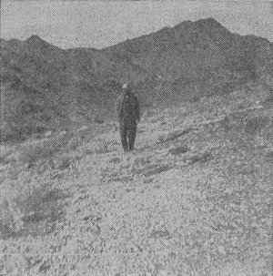
Les symboles de l'empreinte de pas racontent pourquoi les hommes de l'espace sont venus sur Terre et ce qui pourrait arriver si les hommes sur Terre refusent de vivre les Lois Universelles du Père
Infini. Il existe de nombreuses et nombreuses significations des divers symboles, seule une intérprétation partielle
peut en être faite ici. Nous devons garder à l'esprit qu'il s'agit de symboles d'un autre monde ; cependant, la
planète Terre faisant partie du Grand Tout, nous pouvons
nous attendre à ce que certains faits restent constants dans cette Totalité. De plus, il y eut dans les temps anciens
des communications entre la Terre et d'autres mondes.
Les symboles anciens de la Terre sont, aussi, les
symboles des êtres de l'espace.
De nombreuses personnes ont demandé : Si les gens de l'espace sont si intelligents, pourquoi ne tapent-ils pas
tout simplement un message en anglais et vous le donnent ? Ce serait bien plus simple que toutes ces affaires
d'empreintes de pas enigmatiques ! Ces gens oublient qu'une feuille de papier typographiée ne serait la preuve d'aucun contact de cette sorte et de plus, que les gens aiment leurs
"énigmes", cela les fait réfléchir ? et c'est exactement ce que veulent les amis de l'espace. Ils font ces empreintes
de pas pour aiguiser la curiosité, et à travers le désir des gens de savoir ce que veulent dire les symboles viendra
la réalisation. Ils seront "en phase" pour ainsi dire avec l'idée entière des visiteurs de l'espace.
L'auteur (tout à droite) réalisant les moulages de plâtre. Mme Williamson, Bailey, McGinnis, Wells (de
gauche à droite).
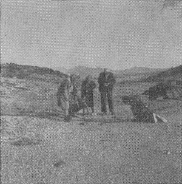
En bref, une décomposition des symboles montre ce qui suit :
Utilisation d'une imagerie simplifiée : La représentation pictographique serait pratiquement la
même quels que soient l'endroit ou celui qui les utiliserait. Les formes utilisées sont réellement limitées.
Utilisation de points et lignes simples : Ils seraient nécessairement les mêmes quel que soit le
monde où ils seraient utilisés. Par exemple :
Utilisation du numeral 3 pour représenter Triune God-head; Corps, âme et Esprit, etc.
Utilisation de points, plus petits ou plus grands selon le cas, pour indiquer les planètes et leurs satellites
respectifs. Comment cela pourrait-il être fait autrement ?
Empreinte de pied gauche. La flèche pointe vers le pouce de la trace (comparez avec la planche IV)
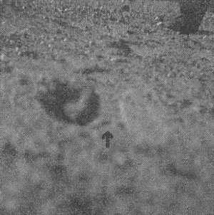
Utilisation d'une empreinte de pas pour convoyer le message désiré :
Après tout, ce serait a most simple way because the marks left by the foot are ample proof of a
contact and these same marks can be studied; on peut en faire des moulages ; des photographies peuvent être
prises, etc.
Egalement, la forme de pied elle-même nous donne un indice sur la manière de lire le message. Nous
savons qu'en marchant nous commençons sur le talon et terminons sur la pointe. Par conséquent, en lisant les
symboles, nous commençons par les symboles sur le talon, continuons de là vers la plante, puis jusqu'aux
symboles de la pointe.
Egalement, chaque empreinte de pas, gauche et droite, doit être considérée comme une unité en
elle-même. Ainsi, chacune a un message distinct à transmettre ; cependant, toutes 2 sont liées à un message
global.
Nous devons aussi prendre en considération le fait que les symboles qui furent observé au sol sont
exactement l'inverse (en direction) des symboles sur la semelle des chaussures faisant l'impression des
empreintes. Un moule est toujours l'opposé de l'original, etc. Cependant, notre visiteur de Vénus a attiré l'attention sur les empreintes en
elles-mêmes ; pas sur les semelles de ses chaussures. Donc, l'homme de l'espace doit avoir pris ce fait en
considération lorsqu'il a envisagé le message et les symboles correspondants. Nous are not to read the symbols
on the plaster casts, for as stated above, they are the reverse of what should be read. In interpreting these
symbols then, we must keep all these facts in mind, remembering them as they appeared on the ground originally.
Empreinte de pas droite. La flèche pointe vers le pouce de la trace (comparez avec la planche
VI)
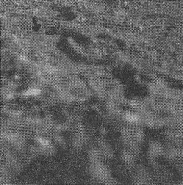
Utilisation de ce qu'on appelle la Swastika et d'autres symboles : L'horloge véritable de l'univers
est de la forme d'une Swastika. Il s'agit du Big Dipper tournant autour de l'Etoile du Nord. Certains des autres
symboles représentent la forme du groupement d'étoiles dans certaines constellations. How else would you show these
heavenly bodies and their arrangements except by drawings of what they look like? These would, of course, be true
universal symbols. Certainly the spacemen wouldn't give us symbols we couldn't understand. What good is a message if
we don't know the meaning of it? La forme de certaines constellations would be different as viewed from other
worlds, but space people would know what the form was that appeared to men on Earth.
Planche IV - Empreinte gauche
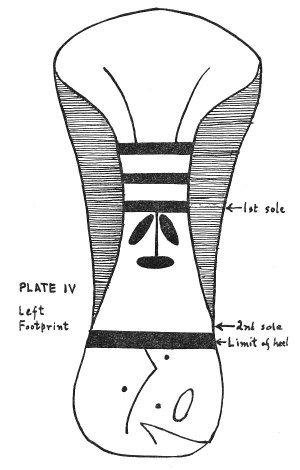
J'ai réalisé les moulages de plâtre de l'empreinte gauche et droite. A partir d'une étude préliminaire des moulages
(et des dessins réalisés avant to the pouring du plâtre) a été réalisée une reconstruction partielle des traces
d'origine. Par conséquent, les dessins des empreintes tels que reproduits dans la Gazette de Phoenix du
novembre 1952 n'étaient pas tout à fait exacts. J'avais fait
des dessins en vitesse à partir de mes notes sur le terrain pour une publication immédiate dans le journal. Par la
suite, je fis un travail considérable sur les moulages et lors de certains tests nombre de symboles plus petits
vinrent au jour. Quiconque, cherchant dans les archives les plus anciennes du monde, arriverait au mêmes conclusions
que les miennes.
Je pris plusieurs photographies des événements du
novembre 1952. 5 de ces photographies sont reproduites dans ce livre (voir
la planche III, figures 1 à 5).
From the impression left by the LEFT FOOT, we get the following interpretation:
L'empreinte GAUCHE (voir la planche
IV), taken as a total, represents things Spiritual and Cause.
In reading the footprint, we read from heel to toe; for when stepping we begin on the
heel and end on the toe. Therefore. the footprint message should be read from bottom to top.
That which is represented on the arch is chief, principle or prime. The Sign of the Archer is
also on the arch.
On the heel we see a simple pictographic story. The "7"-shaped figures appear to be like simple
bird forms denoting flight. We see a tilted Saucer in the shape of an open mouth (oval) symbolizing the fact that
spacemen have a message to give to their brothers on the Earth. There seems to be a system of 3's represented:
Saucer oval
"7"-shaped figures (also made up of two lines each)
Trois cercles ou points
There is clockwise motion here as in swastika symbols on the right footprint. This shows that the planetary bodies
represented are in constant motion. The planets in what we call the first, second, and third orbits are shown:
Mercure
Venus
Terre
Also, the two "7"-shaped figures seem to form an enclosure around two of the planet symbols and the oval Saucer
figure. This shows that these two planets are connected with the landing contact and personal interview, but Mercury
is not. In other words, a space craft has come from Venus and made contact with Earth. The three circles or dots
used to represent these three planets are drawn roughly to scale. Therefore, one can immediately see what circle
represents what planet, etc.
On the arch we see nine separate lines drawn and used to construct the symbols here. The numeral 9 was
assigned as the symbol of Life Force by the ancients. The esoteric meaning is: "to revolve in circles or orbits".
Here too, is undoubtedly the secret of Saucer propulsion. The utilization of universal or cosmic energy. No fuel is
needed, except the ideal "fuel" of the Universe itself in the form of some type or adaptation of electro-magnetism.
The three lines, above the arrow-like figure, represent the equation: one plus one equals three. In otherwords, by
adding the laws of attraction and repulsion we get manifestation or propulsion. The two upper vertical, curved lines
represent the forward motion of the space craft, and since they do not meet, and can never meet, they curve away and
outward from each other. This shows that the propulsion force is to be found throughout the Universe. We also find a
more spiritual message in the symbols on the arch. The arrow-like figure represents one whose faith is low. One
whose spirit acknowledgeth the gift of spirits, but not the All person. The three horizontal lines directly above
indicates that the spacemen have found three different types of people on Earth. One type believes only in earthly
or material things; another believes in things spiritual; and the third has faith and believes in the All Creator.
Unless a man puts away the materialism that is in him, he cannot rise to the emancipated heavens of the Creator.
Also, the two lines extending upward represent the upraised arms of a man seeking. The Universal prayer of mankind.
The Creator has sent people from outer space to guide Earthmen as they free themselves from darkness and bondage.
These spacemen, in the name of the Infinite Father, will raise up men with eyes to see and ears to hear. This
message is therefore proclaimed to all the inhabitants of the Earth.
PLATE V. Left Footprint
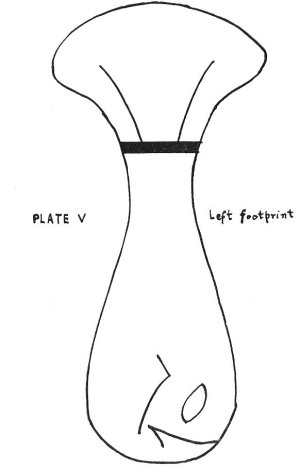
Therefore, the LEFT footprint shows that our brothers from outer space have come to the Earth to let us know our own
spiritual condition at this time and to show us how this condition can be improved. It also shows by what method they
arrived here.
The symbols in both footprints bear a strong resemblance to a crude drawing of a fish. We must also take into
consideration the fact that a built-up layer was superimposed on the flat sole of the original shoe. Since this
section was added to the bottom of the shoe it must mean that we are only to consider that part and omit the general
outline and shape of the foot itself. When we do this we immediately recognize the outline of a fish. (See Plate V).
In the LEFT footprint, that which appears to be the eye of a fish, is also a geometrical figure known as Vesica
Piscis. It is a rough outline of a fish itself, formed by two curves joined at extremities. It was held in high
veneration in ancient times. In pictorial art, the Vesica Piscis is the oval aureole or glory within which the early
painters depicted figures of Christ, the Virgin, or an apostle. It is an emblem that replaced the earlier figure, the
fish or Ichthus, and is found on the sarcophagi of the catacombs, in medieval symbolism, seals, etc. The broad arrow
found here was also in use since earliest times, and was found on all ancient buildings.
The fish was frequently associated with world saviors. Vishnu was expelled from the mouth of a fish. The Egyptian
Isis is often shown with a fish on her headdress. Oannes, the Chaldean savior, is depicted with the head and body of a
fish from which his own form protrudes at various points. Christ was symbolized by a fish. The mysterious Greek name
of Jesus means a fish. Ichthus--used in early Christian art as a symbol, because
the letters of this word are the initials of the Greek words: Jesous CHristos THeou Uios Soter (Jesus
Christ, Son of God. Savior). Therefore, the
first monogram of the Christians was a fish. Oannes came out of the sea, was amphibious. He brought to the Chaldeans
their culture, showed them how to build cities, and retired again to the sea. Quetzalcoatl, the Mexican Toltec
hero-god, is represented by a whale which rose out of the sea; the old serpent covered with feathers who lies in the
ocean. He, too, was amphibious and was known as "the Heart of the Sea". And he, too, reputedly brought to his people
their culture.
In some ancient records, the planet Venus is symbolized by a fish. In connection with the fish symbol we should
consult the Holy Bible. In St. Matthew 12:38-41, we read: "Then certain of the scribes and of the Pharisees answered,
saying, Master, we would see a sign from thee. But he answered and said unto them, An evil and adulterous generation
seeketh after a sign; and there shall no sign be given to it, but the sign of the prophet Jonas: for as Jonas was
three days and three nights in the whale's belly; so shall the Son of man be three days and three nights in the heart
of the earth. The men of Nineveh shall rise in judgment with this generation, and shall condemn it: because they
repented at the preaching of Jonas; and, behold, a greater than Jonas is here."
Again, in St. Matthew 16:3-4, we read: "And in the morning, It will be foul weather to-day: for the sky is red and
lowering. O ye hypocrites, ye can discern the face of the sky; but can ye not discern the signs of the times? A wicked
and adulterous generation seeketh after a sign; and there shall no sign be given unto it, but the sign of the prophet
Jonas."
As we continue to study the symbols of the LEFT footprint, we see 3 bars above an arrow-like figure. If we consider
the fish symbol here, it is interesting to read, Jonah 2:6: "I went down to the bottoms of the mountains; the earth
with her bars was about me for ever; yet hast thou brought up my life from corruption, O Lord my God."
Here we find reference to the "earth with her bars". We consider the Earth to be in the third orbit, so the three
bars could stand for that fact. Also in Jonah we find reference to "the earth with her bars was about me for ever; yet
hast thou brought up my life from corruption". So, too, we find the two expanding lines above the third bar going
upward or outward, away from the head of the fish symbol. Also, remember, Jonah was in the belly of the fish three
days and three nights.
Feet themselves, represent the natural, external plane of life in contact with the world; and the feet of the
spaceman represent the contact and presence of space beings with Earthmen and the Earth planet.
Swedenborg says that a fish symbolizes sensual affections which are the ultimate affections of the natural man. Also,
those who are in common truths, which are also ultimates of the natural man. Also, those who are in external
falses.
Their likeness to birds (swimming of fishes; flying of birds) suggests that fishes correspond to affections for
intellectual activity. And what does the fact that they live in the water instead of the air show in regard to the
kind of thoughts to which they have relation? Plainly the fishes of the mind enjoy a lower, less spiritual kind of
thought than the birds. The water, which is their home, corresponds to truth of a natural kind--truth of natural
science, of worldly industries, of the letter of the Word, and of practical right and wrong.
An interest in gathering facts of science is a hungry fish swimming in the water and devouring all the little
creatures which come within his reach. And presently some larger fish swallows up our little fish with many others
like him. So stronger, broader, scientific minds absorb the observations of smaller minds and deduce from them the
great principles of science. There is in ourselves an enjoyment in grasping the broader principles of knowledge, which
feeds upon our special interests in particular subjects. This is a larger fish feeding upon the little ones.
The interest in knowledge of worldly affairs is also a spiritual fish, which feeds with eager appetite upon our
observations of the world, and may in turn contribute to a noble interest in tracing the Creator's providence in
worldly affairs. So too, an absorbing interest in the external forms of worship, are fishes which may easily become
food for more spiritual affections. But these same fishes-affections for gathering natural knowledge, are bad when
they refuse to minister to the spiritual life, and at-tending only to the evidences of the senses, fall into many
errors which they eagerly confirm.
In Genesis 1:20-21, 26 and Psalm 8:6-8, we see that man on Earth is supposed to have dominion over the fish
of the sea. These can be the spiritual fish (affections) and man is told he must have control over them.
In St. Matthew 13:47-49, we find: "Again, the kingdom of heaven is like unto a net, that was cast into the sea, and
gathered of every kind: Which, when it was full, they drew to shore, and sat down, and gathered the good into vessels,
but cast the bad away. So shall it be at the end of the world: the angels shall come forth, and sever the wicked from
among the just."
In St. Matthew 4:18-19, St. Luke 5:3-11, St. John 21:1-13, we see the disciples as fishers of men. They would also be
fishers in the sense that it would be their duty and privilege to lift men up from the sea of atmosphere of natural
worldly life into the air and sunshine of true spiritual life.
Therefore, we see that the space people are now present with us on Earth and are attempting to lift us up out of our
present stricken condition into a fuller, more satisfying existence, by their guidance and aid. At one time the world
was in the Age of Taurus, The Bull. The Egyptians worshiped Apis or Hap, a sacred bull. And a calf was worshipped by
the Israelites in the desert during the exodus from Egypt. Then came the Age of Aries, The Ram. The men of David's
time were shepherds--shepherds in the Age of the Ram. King David, Jacob, Moses, Cyrus the Mede, all these had been
shepherds, and the Psalms speak of God leading the multitudes as if they were his precious sheep-fold. Then came the
age we are just now leaving--Pisces, the Age of the Fishes.
Each of these ages lasts approximately two thousand years. However, each one is usually about two thousand, one
hundred and fifty years long, and the passing from one such age into another is always accompanied by both external
and internal storm and stress such as the world is now going through. The last change took place about two thousand
years ago when Jesus came on the earthly scene as the Great Piscean Avatar or Teacher--and
the new world that formed
itself from that turbulent era and area was the western Christian civilization that we know today. Since this great
enterprise has worked itself out and fulfilled its mission, it is now drawn to a close, and the New Age of the
Water-Bearing Aquarius is upon us.
As a Piscean Master, Jesus fed the multitude with fish; he walked on the water; his
followers were fishermen, and as
we said above, he made them fishers of men. Clement of Alexandria enumerates the fish, the anchor, the ship and
fisherman as fitting objects to be employed by the Christians on their seals and lamps. These are all Water-Fish-Age
symbols. An early Christian drawing shows the Church, in the form of a ship, borne by Christ amidst the storm and
stress of life. Pisces is a rainy constellation, bringer of storms, and controls the fate of sailors. Since the time
of Christ the world has progressed along avenues that dealt almost entirely with water. For several hundred years all
of man's ambitions were wrapped up in the seas and oceans. He traveled by sails to the far corners of the world; he
became a great explorer using the waterways of the world to serve him in his quest. The result was the discovery of
new lands in the West, and new frontiers promised new life and new hope for mankind. The darkness and brutality of the
Middle Ages was forgotten in these new-found lands, and man as a spiritual being leaped to the challenge of
development.
Until very recently, our great sources of power were nothing but waterpower. We had steam engines for this and that;
we built great dams to conserve this power. Only a few years ago man took to the air; but he had always longed to fly.
Primitive man had watched the eagle with envy.
Man graduated as a shepherd (Aries), and as a Fisherman (Pisces), and now he becomes a Gardener in Aquarius the New
Air Age. This title expresses the kind of work that he has to do in his new role. Psychologists insist that the
conscious and the subconscious minds stand almost exactly in the relationship of gardener and garden.
The gardener sows his seed in the soil that he has prepared; he waters the ground, and selects a site upon which the
sun will shine--but he does not try to make the seed grow. He leaves that to Nature. Therefore, we speak the Word but
we leave it to Divine Power to make the demonstration. The dominant note of the New Age then is Spiritual development
and Spiritual demonstration.
It takes mankind about twenty-six thousand years to go through the class of twelve lessons about the Creator, which
we call the Zodiac. We have gone through these lessons many times before, and we will have to repeat them in the
future, but each time we go through the same lessons at a much higher level with a different quality of knowledge, for
it is not an endless circle, but an upward reaching spiral. The change we are now experiencing is not a change brought
about by merely passing from one Sign or Age to another, such as happened in passing from Taurus into Aries, or Aries
into Pisces; our present change is not one brought about by a two-thousand year plus cycle, but brought about by the
ending of a Solar Year, or twenty-six thousand years. That is why we are now going through a great upheaval;
physically, mentally and spiritually.
The LEFT footprint therefore, taken as a whole, can signify the Piscean Age; and that Age has ended, for the fish is
trampled underfoot!
From the impression left by the RIGHT FOOT, we get the following interpretation:
The RIGHT footprint (See Plate VI), taken as a total represents things
Material and Effect.
In reading the footprint, we read from heel to toe; for when stepping we begin on the
heel and end on the toe. Therefore, the footprint message should be read from bottom to top.
That which is represented on the arch is chief, principle or prime. (The symbol here of three
dots can mean: Since; Because; Equals; Result In; For The Reason Of).
Plate VI. Right Footprint
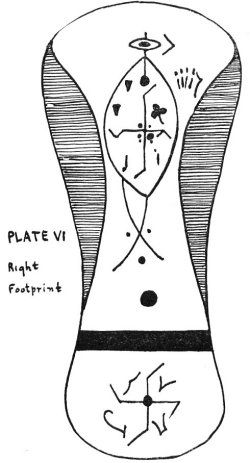
On the heel we see the Clock of the Universe going in a clockwise direction. In the center we see one
circle (dot). This represents or symbolizes the Creator, the Infinite; the curved arms symbolize the Four Great
Primary Forces; the arms project from the circle in the center, and being joined to the circle, they are coming from
it. That is, these forces emanate from the Creator. The swastika, popularly called a "good luck symbol" and one of
the many symbols of the Four Great Primary Forces, was a favorite among the ancients throughout the world and still
clings to the hearts of present (Masonic, etc.) humanity. Pythagoras on his return from Egypt taught that the
numeral 4 referred to the Great Creative Forces of the Universe. The legend is that: "At the command of the Creator
the Four Great Primary Forces built the universe and all therein. They . . . the Four Great Builders, the Heavenly
Architects and Geometricians, the Four Great Strong Ones . . . built the earth and formed its life." The swastika
symbol evolved from the simple cross symbol, and both are among the most ancient symbols of Earth. The swastika is
the Key to Universal Movements. Since Four Great Primary Forces were used in Creation, and are now governing the
movements of all bodies throughout the Universe, these forces are working from West to East, and carry all celestial
bodies in the direction of West to East. These forces by their actions cause the revolving bodies to continue their
force, so that apparently the force comes from the movements of the body. The atomic element is simply a collector,
carrier, and distributor of the portions of primary forces that have been handed to it; atomic force does not obtain
its energy from elements of the atom. By smashing the atom the flow of forces through it is destroyed. The ancients
used the flow, they did not destroy it. This power is the Will and Command of the Infinite. The esoteric or hidden
meaning of the swastika was known by the priesthood and this meaning was not communicated to the layman. (See Plate
XVII" p. 253). The swastika is an ancient
sign in India and is sacred for it was one of the body marks of the Lord Buddha and has a solemn meaning among both
Brahmans and Buddhists. The swastika has been said to resemble the apparatus used prehistorically to make fire and
thus represents sacred fire, living flame. Milani thought it was a symbol of the sun and "seems to denote its daily
rotation".
Plate VII
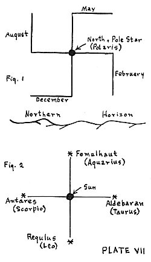
Or it may be lightning, the storm, the Aryan pantheon; benediction, good omen. The swastika is very ancient and
widespread for it was used in Crete, in ancient Rome, on Celtic rocks in Scotland, rock carvings in Sweden and
throughout the Orient. The wheel cross, which is thought for Stone Age man to have symbolized the sun, is displaced
in the Bronze Age by the swastika. American Indians of the pre-Columbian period used this cross for a number of
purposes. The most frequently mentioned is as a symbol of the four directions which were important in Indian ritual.
It has also been identified as a wind symbol, storm symbol, and phallic meanings have been attributed to it. If the
cross pieces point to the right, it is a lucky sign; if they point to the left it is an unlucky sign. In China the
swastika was the symbol of a benevolent society. The word swastika comes from the Sanscrit and in Northern Europe it
was called Fylfot. In China it is known as Wan. This is especially interesting because in "The Saucers Speak!" Wan-4
was a representative of the Safanian Solar System. And Wan is the Chinese word for swastika. Also notice the use of
the numeral 4. Apparently, from the beginning the Four Great Primary Forces, called in the most ancient writings the
Sacred Four, have played a cardinal part in man's religion. It would appear that most of the ancient theology was
based on their workings, and many theological lines and divergences sprang from them. Another ex-ample of "God
Provided--Man Divided". The Sacred Four are still very much with us. But just what are these four? Since
the arrival of friends from outer space it is possible to know the true meaning of this sacred number. The Four
Great Primary Forces are: Static Magnetic Field; Electro-Static Field; Electro-Magnetic Wave; Resonating
Electro-Magnetic Field. Ancient temples were dedicated to these Sacred Four as representative and symbolic of the
almighty power of the Creator. Ancient man at one time on Earth understood the true meaning of the Sacred Four, but
later this meaning was lost to him; however, it continued to be used in rituals and thus was handed down from
generation to generation. These Sacred Four were the Executors of the Seven Great Commands of Creation. The ancient
conception was: "In the beginning chaos reigned throughout the universe, which was in darkness and without sound.
Then the Creator, desiring to create worlds, commanded His Four Great Forces to establish law and order in the
universe so that creations might commence. When law and order became established the Creations were carried out by
the Sacred Four according to His desires and commands." Apparently all ancient peoples had their special names for
the Sacred Four according to their language; some had scores of names for them. They were designated as: The Sacred
Four, the Four Great Ones, the Four Powerful Ones, the Four Strong Ones, the Four Great Kings, the Four Great
Maharajas, the Four Great Builders, the Four Great Architects, the Four Great Geometricians, the Four Great Pillars
of the Universe, the Four Genii, the Amshaspands by the Mazdeans, the Elohim and Seraphs by the Hebrews, the Rabiri
and Titons in Hesiod's theogony, etc. Not only did the Sacred Four get sundry names bestowed upon them by various
people; but symbols in the form of crosses were designated to emphasize the names. The swastika, itself, always
retained a warm corner in the people's hearts. As said before, this symbol is found throughout the world in all ages
from ancient Mexico to early American Mound Builder to Egyptian, etc. Therefore, in the heel, we see the Four Great
Forces emanating from Deity, and traveling from West to East around a center. Why do we look to the most ancient
symbols for interpretive material? This is because "We have found in the most ancient records of the Aryan language
proof that the indications of religious thought are higher, simpler, and purer as we go back in time, until at last,
in the very oldest compositions of human speech which has come down to us, we find the Divine Being spoken of in the
sublime language which forms the opening of the Lord's Prayer." (Duke of Argyll). Remember, the swastika was
primarily a sun symbol and was associated with Apollo. It has always been associated with those who apparently came
to Earth to teach men better ways of living; of governing themselves; agricultural methods; and greater appreciation
of the physical form in beauty and perfection. Therefore, the swastika is not indigenous to Earth. It is certain
that this ancient symbol came to the people on Earth from a source in outer space and was then incorporated into
religious beliefs on this planet. So, it is not too difficult to see that it would be very useful and would find its
way into a universal symbol. All men everywhere would understand the significance of the Sacred Four and the
Creator. In the book, "Astronomy" by Arthur M. Harding, Ph.D., in the section entitled "The Clock In The Northern
Sky" we find: "The Great Bear is the oldest of the constellations. It moves slowly around the pole star, making one
complete circuit in twenty-four hours. Here is a Celestial Clock that never runs down, requires no attention and is
always absolutely accurate. From this natural clock the expert astronomer can get his time with an error of only a
few minutes if he knows the day of the month. When the Dipper is below the pole star it is in its natural position.
Six hours later it will be standing on the end of its handle on the East side of the pole. At the end of twelve
hours it will be upside down and over the pole and at the end of eighteen hours it will be found West of the pole
and standing on its bowl. The Dipper is directly over the pole in May, West of the pole in August, directly beneath
the pole in December and East of the pole in late February." Taking this description of the Great Bear Constellation
into consideration we find we have a definite swastika design that is, by drawing, a clockwise swastika. However, it
moves counter-clockwise around the pole star. (See Plate VII, Fig. 1). So it is easy to see why
the space people might very well use the swastika as a universal symbol or emblem. Now we will interpret the
four symbols that are drawn between the four arms of the swastika in the Right Heel. The early writings of
the Persians and the Chinese tell us that there were Four Bright Stars in the sky that protected and watched over
the others. Notice the use of the Sacred Four again. These stars were said to be in the West, the North and the
South. These positions evidently corresponded to the Vernal Equinox, the Autumnal Equinox, the Winter Solstice and
the Summer Solstice--the Four Cardinal points of the sky. If we turn the Zodiac back to where it was five-thousand
years ago we find four bright stars in the Four Cardinal points of the heavens. (See , Fig. 2). If we look into the
sky in the vicinity of these four points we can find no stars of any considerable brightness and we perhaps may be
inclined to doubt the accuracy of this ancient literature or to wonder whether the four bright stars have faded
considerably during the intervening years. However, we must recall that, because of the westward precession of the
equinoxes, the Four Cardinal points do not have the same location with reference to the stars as they had ages ago
for the constellations of the Zodiac are continually slipping in an easterly direction with reference to the Vernal
Equinox. Therefore, we must study the Zodiac as the Persians and other ancients saw it! Suppose we turn the Zodiac
back (westward) through sixty degrees (60°). Imagine our surprise at finding four bright stars: Aldebaran, Antares,
Regulus, and Fomalhaut--almost exactly in the places assigned to them by the Persians. Since the Zodiac has slipped
through sixty degrees in about five-thousand years we can tell approximately when the observations of these ancient
peoples were made. Of the four bright stars that the Persians and Chinese said were in the Four Cardinal points of
the Zodiac, Aldebaran is in the constellation Taurus (the Bull), Antares is in Scorpio (which Abraham and his
followers called the Eagle), Regulus is in Leo (the Lion), and Fomalhaut is in the outskirts of the constellation
Aquarius (which was usually represented by a man pouring water out of a vessel). It was, therefore, natural for
early peoples to think of four living creatures--the Bull, the Eagle, the Lion, and the Man--as being situated in
the four principle points of the Zodiac--the Vernal Equinox, the Autumnal Equinox, the Winter Solstice and the
Summer Solstice. Although the Persians and Chinese seem to have been more interested in the four stars than in the
constellations with which they were associated, the early Hebrew writer called special attention to the Four Living
Creatures. An interesting bit of evidence that the constellations of the Zodiac have been slipping around the
Celestial Sphere since the very dawn of history is to be found in the Book of Ezekiel and in Revelation. It is
obvious from the descriptions of the "wheels" made by the Prophet Ezekiel that here was a landing of four Saucers
and their respective pilots or occupants.
Plate VIII. Fig. 1: Aquarius. Fig. 2: Taurus
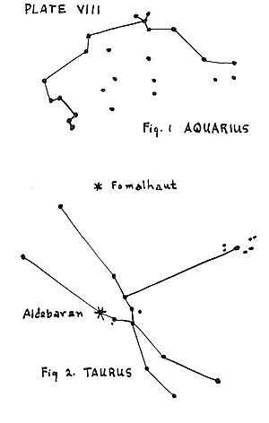
However, this is discussed in detail in this book under The Prophets in the section called: Other
Flesh. We see in Ezekiel 1:10: "As for the likeness of their faces, the cherubim, they had the face of a man; and they four
had the face of a lion on the right side; and they four had also the face of an ox (bull) on the left side; they
four also had the face of an eagle." In Revelation 4:6-7, we read: "And round about the throne, four living
creatures full of eyes before and behind. And the first creature was like a lion, and the second creature like a
calf (bull), and the third creature had the face of a man, and the fourth creature was like a flying eagle." It is
obvious that the writers of the above passages were referring to the symbols of the constellations or four bright
stars as they appeared in the Zodiac about five thousand years ago. The four bright stars associated with the Bull,
the Eagle, the Lion, and the Man were situated at the Vernal Equinox, the Autumnal Equinox, the Winter Solstice and
the Summer Solstice, and, according to Chinese legends, kept watch over all the others. Therefore, we can
get a fairly accurate interpretation of the four symbols drawn between the four arms of the swastika in the Right
heel: First of all, for simplicity, let us look at the symbol drawn in the upper right hand section of the
swastika. It looks like: This
symbol is V-shaped and very closely resembles the V-shaped constellation or star group known as Taurus (the Bull)
(See Plate VIII, Fig. 2). In the lower right
hand section we see: This
symbol closely resembles the star grouping in the constellation of Leo (the Lion). (See Plate IX, Fig. 1). In the lower left hand
section we see: This symbol
closely resembles the fishhook-shape of the star group in Scorpio (the Eagle). (See Plate IX, Fig. 2)
PLATE IX. Fig. 1. Leo. Fig. 2. Scorpio
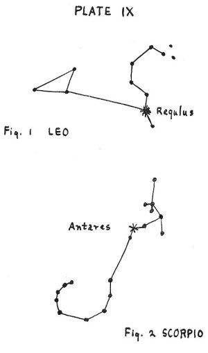
. In the upper left hand section we see: This symbol resembles the main star grouping in
Aquarius (the Man). (See Plate VIII, Fig.
1). Therefore, we can see why the four symbols have been drawn between the four arms of the swastika instead of at
the four points. It is because now these four constellations of the Zodiac have slipped into a more Easterly
direction. So, the swastika in the heel is definitely the Universal Time Piece or Clock. Its position
indicates where those constellations are today. The diagram on Plate X, Fig. 1 shows the four symbols from
the heel representing the four constellations and their relative positions five-thousand years ago. The drawing on
the heel itself shows their relative positions today. (See Plate X, Fig. 2)
PLATE X.
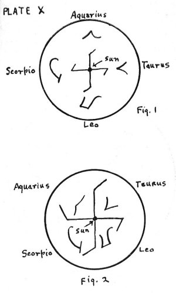
. We can see that the four arms of the swastika have moved clockwise in an Easterly direction. When thinking of the
swastika as the Universal Clock, the center of it represents the pole star Polaris; when thinking of it as pointing
to the four constellations and showing their present position, the center represents the Sun. By looking at Plate XI, and moving the swastika arms sixty
degrees to the East (Right) one can readily see the meaning of Plate X. Therefore, our space brothers are
showing us the position of the four constellations as they are in the heavens at this time. Here they have given us
the key to Universal Movement--from West to East and constant.
PLATE XI
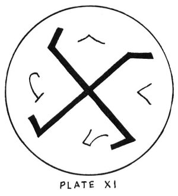
The use of the sacred four numeral is world-wide and very ancient. It has been claimed by the ancients that there
are Four Ages of Man through which this Earth has already passed. Each of the Ages ended in catastrophe. We are said
to be now living in the Fifth Great Age of the planet Earth. In the center of the Aztec calendar stone the Sun-God
Tonatiuh is depicted and the Aztec history of the world divides Earth events into Five Suns or Ages. The first four
Ages were ended successively by a jaguar, a hurricane, a fire and a flood. Our present Sun or Age is supposed to be
destroyed by an earthquake. Amazing new interpretations of the Aztec calendar stone are now being made by research
scientists. Evidently the stone tells the same prophetic story that can be found in the interpretation of the Great
Pyramid of Gizeh. It says that there are pyramids in North America and that they were somehow hidden when the white
man began his march on America from Mexico. From the idea of a clock we immediately think of the passage of time or
of past events or cataclysms that have transpired on Earth. So, the four could also stand for these past Ages. The
fact that they are passed Ages is shown by the arms of the swastika being moved in a Easterly direction. It also seems that the symbols of the Bull, Eagle,
Lion and Man were used (or drawn) on the sides of the four Saucers seen by the Prophet Ezekiel to show that man as
Man is to be found everywhere in the Creation, throughout the Omniverse. The Universe extends out from small Earth
in all Cardinal directions of North, East, South and West. And, as the ancients believed, these four "royal" stars
(or suns of other inhabited worlds) were watching over all the rest! There is little doubt that Ezekiel saw
four Saucers--complete with portholes, a type of landing-gear, pilots and emblems. As for the difference in the
angles of the bent arms of the swastika in the heel, is seems this could represent the unbalance in this
section of the Universe at the present time, and it might also indicate the change that will automatically take
place in the Big Dipper star grouping as time goes on. But, since it represents a clock, why shouldn't it show past,
present, and future? The four points of the swastika also mean many more things. (See Plate XVII).
On the arch we see the symbol of three dots. This means: Because of. Therefore, this could stand
for future catastrophe. Because of what has happened to four Ages of Earth represented in the heel.
Three stars or dots always represented a Triune God in ancient times. And when you have the Triune God or Creator
you have effect and result. The sacred three is exclusively ascribed to the Supreme Deity and means a "work of
perfection". So we can see why three dots represent: Because of. For example: Because of the Creator worlds
were formed, etc. These three small dots represent Bod (Mortal); Soul (Mind); and Spirit (Immortal). We can see that
Body is below. Above, and more closely together and associated are Soul and Spirit. Man's soul knows truth of the
spirit; body is farther removed and is shown as a larger dot because physical manifestation is of such importance to
Earth. These three dots form an inverted or upside-down triangle. The crossed lines between Soul and Spirit show
that this is the meeting place (origin) where the Mortal Body below, of a lower vibratory rate, obtains Universal
Truth. One line, which separates Soul (Mind) from Spirit leads directly into the joined lines forming the oval. The
other line separating Spirit from Soul (Mind) does not connect directly with the oval but seems to be trying to
penetrate the edges, not yet having gained entrance but attempting it. This is similar to the sperm entering the egg
to fertilize it. In other words, things of the Soul (Mind) have entered into this section of the Universe and Man
has received it. But things of the Spirit (Immortal) have not entered this section of the Universe except to a
limited degree to the other planets. This can be seen as a club-like figure in the section of the planet Mars to be
extending itself into the edge-line of the oval and is directly beneath the meeting place of the line from things of
Spirit (Immortal) with the edge-line of the oval. The two crossed lines are not entering this section of the
Universe equally, therefore there is a definite state of unbalance here.
The swastika within the oval figure again represents the Sacred Four. The oval itself is once again the
Vesica Piscis and many of the symbols are contained within this oval. It is similar to the aureole of sacred art.
This is a radiance enveloping the whole figure of Christ, or any sanctified being. Sometimes it is an oval and
sometimes it is nearly circular in form. The swastika here divides the oval into four sections. These can represent
four separate "rooms" or "houses" in this part of the Universe. The two horizontal arms are composed of spear or
arrow-like heads. The head or point of an arrow, spear or javelin are ancient symbols showing the Forces are
active. First of all, we have the planet Mercury represented in the upper right hand section. The trefoil, or
three-leaved flower design with stern represents this planet as being in the State of the Flowering of Perfection. A
trefoil is an ornamental foliation of three divisions or foils. What more perfect symbol to show the Triune Godhead!
The symbol representative of All Perfection here represents "flowering" of this Complete Perfection itself. Here,
also, could be perfect harmony of Body, Soul and Spirit.
Going to the upper left hand section we find the planet Venus. We see no moons here and there were none for Mercury,
either. Here are two wedge-shaped figures symbolic of "Builders of Foundation for Universal Truth". A wedge is a piece
tapering to a thin edge and used in raising heavy bodies. This means the raising of the Mortal to unite or meet the
Immortal in Man. Cuneiform characters have a wedge-shaped stroke. These characters were used anciently in writing in
Persia, Assyria, etc. So, we can see why these figures symbolize constructiveness or "building"--in the spiritual, not
the material sense.
Going to the lower left section we find the planet Mars. Only one satellite is shown here, although Mars has two
artificial moons. Possibly two satellites were originally shown, but because of inaccurate drawing and casting one has
been lost. There have been many strange tales told about these satellites in past history. Ancient poets knew of these
two moons before their discovery by Asaph Hall in 1877. Ancient astrological works mention them. For more information
on them see Maldek and Malona in this book in the section called: Other Tongues. Below Mars in this
section of the drawing we see a strange, club-like figure running into the outer edge-line of the oval. This
represents the fact that the people of Mars have more revelation of Universal Truth coming from the Triune Creator
below. However, it is not a complete revelation symbolized by the fact that the line from things of Spirit does not
join the club-like figure, but instead, rests just above it. Still, there is a connection and therefore an influx from
the sources below. It will be noticed that there are no lines coming into the top half of the oval as they are below.
There have been more complete revelations in these sections of Mercury and Venus. Each small dot that represents a
planet is in relative size to the other dots.
Going to the lower right hand section we find the planet Earth. Here we see the known Moon of Earth and the "Dark
Moon" or second Moon of Earth. The "Dark Moon" is mentioned in records of great antiquity throughout the world. We see
a thin, vertical line almost extending to the outer edge-line of the oval. Therefore, there is a seeking on Earth; a
desire in Earthmen's hearts and soul to reach the Infinite Source of All Wisdom and Knowledge of Universal Truth.
These truths are, in turn, embodied in Soul and Spirit represented below. But this line has not made a direct
connection as yet. Compare it with the parallel line in the Mars section. It only lacks the club-like appendage, and
it too, will make a connection.
Now let us look at the two horizontal arms again. We see that the arrow-like head on the left is pointing downward.
This indicates clearly that Mars is directly beneath or behind Venus in State of Progression. The one on the right is
pointing upward, showing that Mercury and Venus both are above Mars and the Earth in State of Progression. You will
notice there is nothing beneath the Earth. Therefore, this planet is in the lowest State of Progression in this
section of the Universe, and especially in this Solar System.
Now we go to the dark oval on top of the vertical, open oval. The material meaning here is that the oval stands for
the planet Saturn. This dark oval appears to be a sort of balance on top of the entire toe symbol. Saturn
knows Mind of Total Universe. Here is found the greatest mechanical advancement in our Solar System. Saturn is the
Balancer of the System pointing out wrongs from rights. It enforces the law of compensation: "As ye sow, so shall ye
reap." This is in line with Divine Will. We can see Saturn here with its rings in the oval form. The oval is an
ancient symbol of the mouth. Saturn, as dispenser of Justice throughout this System is the "mouth" that conveys the
Knowledge of Justice. This oval is not contained within the larger one because the Knowledge Saturn conveys to her
brothers in this System is not from this System alone, but is from the Creator--and therefore it is not limited. A
line extends from Saturn, and through Saturn, and enters the joining part of oval and continues down to the top arm of
the swastika where it meets in another circle or dot. This dot represents the planet Jupiter.
Jupiter is the Creator's Interpreter of Law. Knowledge and Wisdom flowing from His throne. This planet gives to those
who desire it: "Ask and ye shall receive; seek and ye shall find; knock and it shall be opened unto you." Jupiter is
in a progressed state of mental and spiritual advancement over the four planets around the swastika in the oval. The
spiritual meaning here is that the dark oval represents the "All-Seeing Eye". For we see, extending to the right,
another arrow-like head representing active forces emanating from the "All-Seeing Eye". The oval is also an ancient
symbol for the eye. The fact that Saturn is shown above Jupiter means that Saturn is the seat of the Universal
Tribunal, but these two planets are closely associated in state of progression as shown by the direct line from one to
the other.
Now we come to the skeleton-like hand on the right side of the vertical oval. Five fingers and a thumb are shown of a
left hand, palm away. Five is the numeral symbol of the Full Godhead--the Four Great Primary Forces, plus the Creator.
It also stands for the Four Senses and the Cardinal Sense of Feeling. This hand is away from the oval, and not
contained within it. Therefore, it is not limited by the oval which encloses and designates only a very small portion
of this section of the Universe. The active-force arrow-head points directly to this hand. Also notice that the
arrow-like heads on the horizontal arm of the swastika keep the movement going clockwise just as the bent angles of
the vertical arm do. The hand is the most ancient symbol of the First Person in the Godhead. It represents the
creative power of God. In Proverbs 1:24, we read: "Because I have called, and ye refused; I have stretched out my
hand, and no man regarded." And in Ecclesiastes 9:1, we see: "For all this I considered in my heart even to declare
all this, that the righteous, and the wise, and their works, are in the hand of God: no man knoweth either love or
hatred by all that is before them . . ." The Greek Christians represent the souls of the just by showing little naked
human beings, praying with joined hands in the great hand of God. This hand issues from the clouds, whence it appears
to have descended to Earth to take the souls of the righteous, and return with them to heaven and paradise. The hand
also symbolizes ability, power, and thence confidence. To lay the hand upon anyone is to inspire him with life. Hands
mean power, arms mean still greater power, and shoulders mean all power. Communication is produced by the touch of the
hand, inasmuch as the life of the mind, and thence of the body, exerts itself in the arms, and by them in the hands.
To hold up the hands means faith looking toward the Creator. When hands and feet are mentioned together, the former
symbolizes the interiors of man; and the latter his exteriors; or both, whatever is spiritual and natural in man.
Hands show the faculty of receiving. The feet are in contact with the dust of the world; they are less responsive to
the guidance of the will and thought; they are not so directly concerned in doing for others, but serve rather in
bringing us where we can be of use, and holding us firmly while the hands do the work. When contrasted with the hands
the feet represent rather the effort to determine the course of life toward good or evil, while the hands represent
the more particular thought in regard to the service to be done to others. The hands are obedient to inner desires and
thoughts. So, we can see why space people have used the symbol of a foot to convey their message to us; why they have
used the hand symbol inside of the fish symbol; and why they have used the symbol of the Great Fish, itself.
In this RIGHT footprint we see the time element in the head of the fish, and this is represented by the swastika.
There is no eye represented here because the fish is more or less blind to certain time conditions. See St. Matthew
24:36: "But of that day and hour knoweth no man, no, not the angels of heaven, but my Father only." And again in Mark
13:32: "But of that day and that hour knoweth no man, no, not the angels which are in heaven, neither the Son, but the
Father."
The RIGHT footprint therefore, taken as a whole, can signify the Aquarian Age; and that Age is now manifesting, for
the RIGHT footprint itself is not a fish symbol, but the fish is shown inside the total footprint, therefore
it is swallowed up by the New Age. The RIGHT footprint shows something of the past of the planet Earth;
something of the present; and something of the future in that certain events will take place if Universal Law is not
learned or practiced here. It shows that space people have been to Earth before in remote times of antiquity and it
shows our neighboring planets of this System and what their relative positions are in regard to States of Progression.
In this footprint, we also see the Germ of Man's Life encased within the darkness of the interior of the Great Fish.
Man's life on Earth can open into glorious fulfillment never before realized. The active force from the oval of Saturn
pointing to the symbolic left hand with palm away, shows that Man can progress or rise through the hand being offered
by our brothers from outer space at this time.
It is, of course, impossible to come to any kind of a conclusion in such a short analysis of the tracks
on the desert. Much of the material used here first appeared in my: "A Preliminary Report On Analysis Of Symbols
From Footprints Left By A Man From Outer Space-- 20 novembre 1952." Everyone
who diligently studies the footprint symbols comes up with a new interpretation and sheds new light on the meaning of
it all. The people of outer space have given these symbols in the way they have so that man will think! It is
evident that the symbols in both the LEFT and RIGHT footprints have many, many meanings and a great message for the
people of Earth.
To show that a great deal of research is still needed before we can get anywhere near a complete interpretation,
suppose we thought of the oval and crossed lines in the RIGHT footprint as representing a man form. Each planetary
body would therefore represent a certain part of Total Body Form in the Grand Man or the Creator. If this is so, then
we must go into the meaning of various parts of the body. For example, the hands mean spiritually all the desire and
thought which we put into the deeds we do. In a word, the hands are the deeds, which, regarded spiritually, consist of
the desire and thought which prompt them. The hands are extremes of the body, and obedient to inner desires and
thoughts. Love of doing or service and knowledge of how to do. The right hand represents love and the left hand
represents thoughts we put into our work. Those on the left hand are those who learn but do not do. In St.
Matthew 6:3, we read: "But when thou doest alms, let not thy left hand know what they right hand doeth . . ." And in
Psalm 31:5: "Into thine hand I commit my spirit: thou has redeemed me, O Lord God of truth." And again in Psalm 31:15:
"My times are in thy hand: deliver me from the hand of mine enemies, and from them that persecute me."
For a more complete footprint interpretation we will have to study the symbolism and meaning of numbers as well as
symbolic anatomy. Also, more research will have to be conducted along the lines of the world's most ancient symbolism.
For instance, the emblematic hand of the mysteries was a carved hand covered with numerous symbols and this
was extended to the neophytes when they entered into the Temple of Wisdom. An understanding of the symbols embossed
upon the surface of the hand brought with it Divine power and regeneration. Therefore, by means of these symbolic
hands the candidate was said to be raised from the dead. The hand of the mysteries is also known as the hand
of the philosopher. When the disciple of the Great Art first beholds this hand, it is closed, and he must discover a
method of opening it before the mystery contained therein may be revealed. In alchemy the hand signifies the formula
for the preparation of the tincture physicorum. The four fingers represent four Divine Agents through the combined
operations of which the Great Work is accomplished. The wise take their oath by the hand that they will not teach the
Art without parables. To the Qabbalist the hand signifies the operation of the One Power (The crowned thumb) in the
four worlds (the fingers with their emblems). Besides its alchemical and Qabbalistic meanings, the hand symbolizes the
hand of a Master Mason with which he "raises" the martyred Builder of the Divine House. The crowned thumb is Absolute
Light, unknown and unrevealed, whose power shines through all the lesser lights that are but sparks of this Eternal
Effulgence. The Creator's works are all contained within the "hollow of His hand". A man's physical body has five
distinct and important extremities: two legs, two arms, and a head, of which the last governs the first four. The
number five has been accepted as the symbol of man. By its four corners the pyramid symbolizes the
arms and legs, and by its apex the head, thus indicating that one rational power controls four irrational corners. The
hands and feet are used to represent the four elements, of which the two feet are earth and water, and the two hands
fire and air. The brain then symbolizes the sacred fifth element, aether, which controls and unites the other four. It
is easy to see why the space intelligences have used the symbol of a hand with its corresponding number five. I am
certain that the readers of this book will have much more to offer toward a more complete understanding of the tracks
on the desert.
Mr. George H. Lark, librarian of the Philosophical Research Society, Inc. in Los Angeles, California sent drawings of
the RIGHT and LEFT footprints to Florence Sternfels, a psychic of New Jersey. She has worked with Dr. Rhine at Duke
University on different phenomena in the parapsychology field. Mr. Lark did not mention Saucers, etc. when writing to
her and he did not explain the drawings in any way. After meditating on the footprints she wrote: "It seems the owner
of the feet is very odd, and it could be a woman because of the long hair. This person seems to be in another world or
on another planet and talks in a strange language and has an unusual sounding voice. This person also dresses very
strangely. Whatever the mystery is everyone will know in a short time. People like the one the footprints belong to
certainly appear to come from another planet." This is very interesting information considering the fact that this
woman had no knowledge of what these prints were or from where they might have come!
Of our space friend who placed his tracks in desert sand, we might say: "How beautiful upon the mountains are the
feet of him who brings glad tidings . . . ."
The Lemurian interpretation of the tracks on the desert, is given here by itself since placing it with the
preceding material would have only confused both interpretations.
PLATE IV
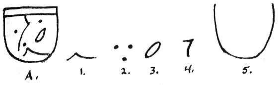
The LEFT footprint stands for the old continent of Mu. Mu, Empire of the Sun, Motherland of the human race
on the planet Earth, lies beneath the waters. She is also called Kui, Pan, or Lemuria. (See Plate IV).
Closed lotus means Mu no longer exists. The fish represents sunken Mu and is, as mentioned before, the
symbol of the Piscean Age. Mu will remain submerged until all influences of the Piscean Age are removed for she will
emerge from Pisces to Aquarius.
Mu lies beneath waves.
The invisible Trinity of Father, Son, and Holy Ghost, pervades all, even the waters. The Empire of the Sun
shines no more for she has set. Since a triangle represents heaven we see that inhabitants of Mu are in their
heavens.
The closed eye--Mu sleeps. The third eye, or the spiritual eye of the Piscean is closed. This also represents
a Cosmic Egg.
Arabic numeral (1) meaning the Infinite One, the Creator. Since this symbol forms the fish it means
Mu is swallowed up. All life returns to the One.
Mu lies in an abyss at a great depth.
PLATE IV
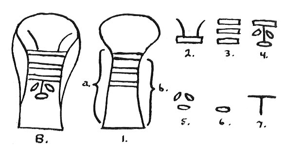
The lotus flower, the floral symbol of Mu. The lotus was the first flower to appear on Earth.
A water jug, (a) with or (b) without the top portion of the lotus. The water jug is the Aquarian Age. The new
continent of Mu will emerge from the water during the Aquarian Age on Earth.
This symbol represents colonists who went out from Mu, the Motherland. The left line represents those who went
West, and the right line represents those who went East.
The three bars represent Mu because she emerged originally in three stages. The rectangle is a Hieratic symbol
for Mu.
Mu is submerged; upside down.
Lemuria, or Mu, was divided into three parts and water separated the land.
She was a tableland.
The "T" represents Tau--resurrection or emersion, also the Crux or Southern Cross in the heavens. Mu will be
resurrected (the new heavens, new Earth, New Age will emerge) in the region of the Southern Cross.
PLATE IV
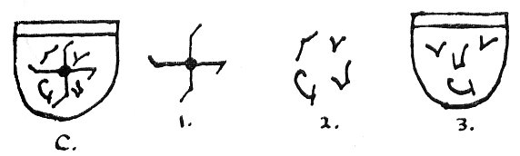
The RIGHT footprint stands for the new continent of Mu. The New Heavens and the New Earth, the New
Golden Dawn or Age, the Aquarian or Air Age; the New Mu will emerge from the Pacific Ocean. (See Plate VI).
The Four Great Primary Forces of Infinite Spirit are continually active in the Universe.
The Four Forces are revolving in vortices--the Central Sun or Creator, the Initiator.
These could possibly be the symbols of the different activity of each Force. The Four Great Primary Forces
are: Static Magnetic Field; Electro Static Field; Electro-Magnetic Wave; Resonating Electro-Magnetic Field.
Life takes form through the activity of the Four Forces. The face tells us that the human form is a Universal
form. Because we are made "in the image of God", whose countenance is as the Sun, full of beauty and "too pure
to behold iniquity", we too should reflect that loveliness with a smiling face; and this face is smiling.
Remember in "The Saucers Speak!" where we mentioned the experiment of Dr. David Todd in 1924? Contact was
attempted in Washington with the planet Mars. Several of the messages received took the form of a crudely drawn
human face!
PLATE IV
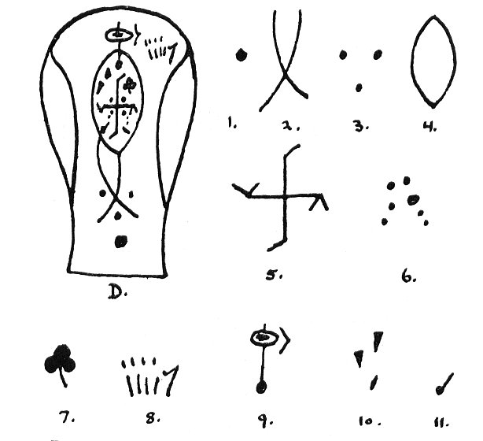
The new, resurrected continent of Mu, brought up through cataclysmic changes in the Pacific.
All comes from the Great Totality, the One. All in the New Age will be according to the [paragraph continues]
Divine Will. (This large dot appears as the first symbol above the heel on the RIGHT footprint and was not
interpreted in the previous section).
Lemurian colonists (reincarnated) will return from East and West and merge into a new race. This will take
place through the coming of positive (male) and negative (female) lines of force.
(a) The One Spirit; (b) Symbol of the Sun, the male principle of the One; (c) Symbol of the Moon, the female
principle of the One. Therefore, from the One androgynous Spirit springs male and female.
The Cosmic Egg, having been resurrected from the water, brings forth new life. This could also be a sperm and
would mean the same thing. (This symbol as a black oval was seen on the side of the large mother-ship that
appeared on the desert, 20 novembre 1952. However, it was on its side
thus: ).
Life takes place through the action of the Four Great Primary Forces within the One.
The Seven Planets of Ancient Wisdom will again be at the heart of the new race and they will be guided by the
planetary forces.
This is a symbol of emersion of New Mu. She will emerge as a unit; the three lands will be one.
Here is another symbol of the Four Forces radiating from the One; Infinite Spirit shown by the thumb. All
forces will be understood and utilized for good in the New Age. The hand is the hand of God and will rule
supreme. The hand is a universal form just as the face is.
Through purity of living, purity of thought, meditating on the One, the Central Sun, and through prayer the
spiritual third eye will be pierced and opened in the new race. All will experience telepathy, clairvoyance,
etc. The activating force will be the Fourth Primary Force or the Resonating Electro-Magnetic Field (RMF). The
symbol of an arrow means the force is active. There is a connection here with sound and may be the means of
rediscovering the lost Sacred Word.
These are geometric patterns. God geometrizes, for everything has mathematical pattern.
This is a musical note, symbol of the "Music of the Spheres". This sound, or vibration, in the fourth
dimension of motion, together with geometric patterns in the fifth dimension of motionlessness, is the cosmic
glue which holds the Universe together.
In Job 13:27, we read: "Thou settest a print upon the heels of my feet." And it has been truly written: "There shall
be signs in the heavens above and signs in the earth beneath." The tracks on the desert fulfill
ancient prophecy, brought to us by OTHER TONGUES!
 This
symbol is V-shaped and very closely resembles the V-shaped constellation or star group known as Taurus (the Bull)
(See Plate VIII, Fig. 2). In the lower right
hand section we see:
This
symbol is V-shaped and very closely resembles the V-shaped constellation or star group known as Taurus (the Bull)
(See Plate VIII, Fig. 2). In the lower right
hand section we see:  This
symbol closely resembles the star grouping in the constellation of Leo (the Lion). (See Plate IX, Fig. 1). In the lower left hand
section we see:
This
symbol closely resembles the star grouping in the constellation of Leo (the Lion). (See Plate IX, Fig. 1). In the lower left hand
section we see:  This symbol
closely resembles the fishhook-shape of the star group in Scorpio (the Eagle). (See Plate IX, Fig. 2)
This symbol
closely resembles the fishhook-shape of the star group in Scorpio (the Eagle). (See Plate IX, Fig. 2)
 ).
).